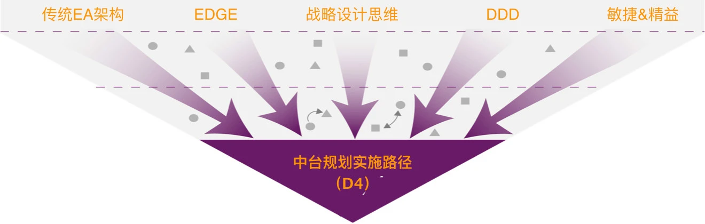
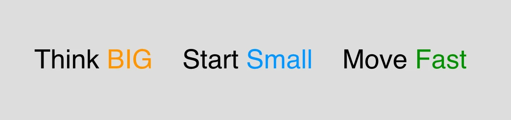
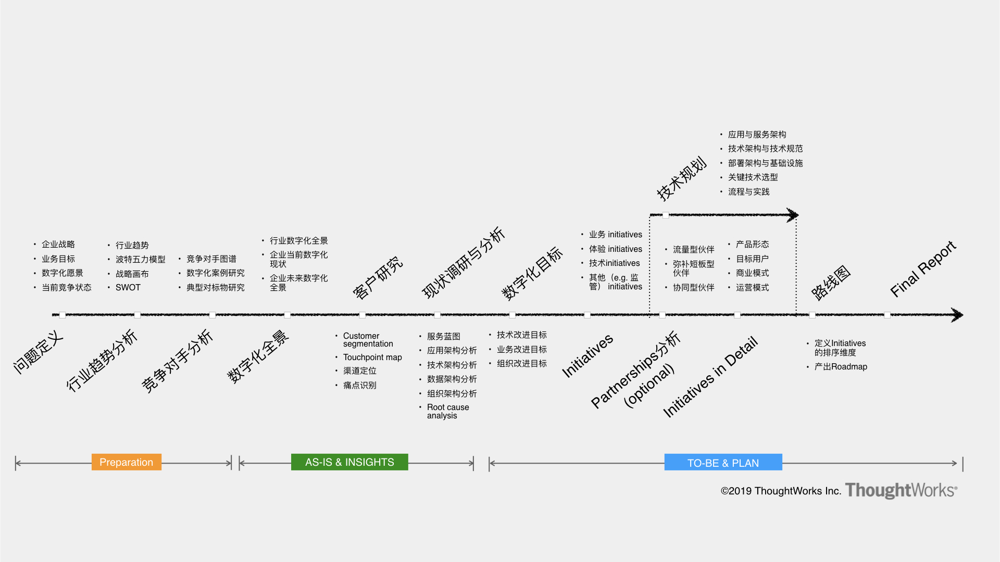
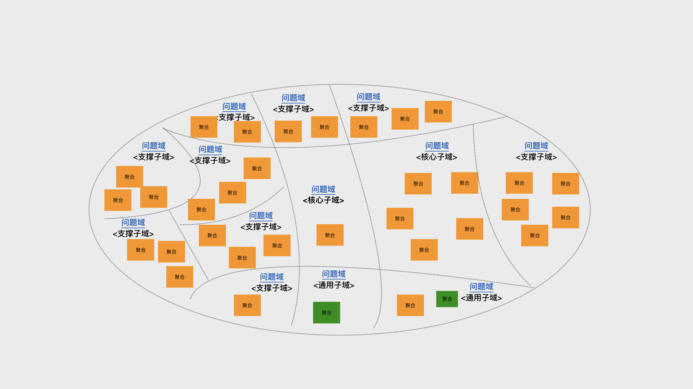
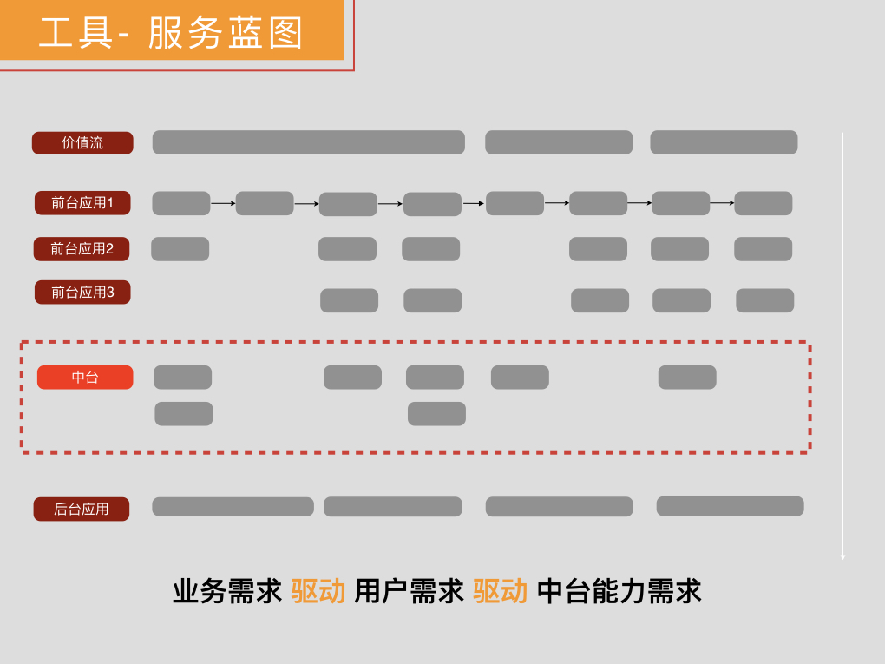

Think Big，Start Small，Move Fast

- 第一个阶段是 Discovery，帮助我们在中台规划前先建立全局视野。在这个过程中我们以企业愿景和战略为输入，结合行业趋势、竞争对手分析、用户客群分析 、业务现状分析、IT 资产盘点，全方位多角度地理解企业的战略市场环境以及业务及 IT 全貌，帮助我们做出最正确的判断。



-
第二个阶段是 Define，帮助我们基于之前 Discovery 发散的各维度信息进行收敛与分析， 对于中台的架构进行定义。通过对跨业务线的业务梳理进行重合度分析，并结合领域分析对业务表象之后的企业核心问题域做进一步展开和重合度分析，一起来收敛推导基于中台的企业架构设计。并基于多维度的打分，形成具体的实施路径规划，说白了就是先做什么后做什么。这里需要注意一点，此时收敛的是仍是企业架构层面，像业务中台、数据中台这种级别的产品，可能只是实施路径中的一个项目，在这个阶段也可以回答那个我们关心的问题，我们到底需不需要中台，需要哪些中台？

- 中台复用的能力类型到底有几种？


- 通过领域分析识别共性能力


- 中台复用的能力类型到底有几种？
-
第三个阶段是 Design，帮助我们针对实施路径中的某一个产品，例如业务中台，做详细的设计，包括产品级的业务需求分析、功能及架构设计、实施计划等。例如对于业务中台产品，在 Design 阶段我们需要回答产品的愿景、边界、产品形态、技术架构、交付计划、成本预估等等，这个过程就是一个标准的产品设计过程，只不过在中台项目中大多是针对中台类的产品而已。

- 细粒度业务梳理
通过范围内的业务架构梳理，再结合最后的跨场景通用能力的分析，我们就可以对关注领域的业务全貌有了一定深入的了解，并且可以识别出不同业务线中一些可复用的业务数据、业务功能与业务流程。而这些通用的业务数据、业务功能、业务流程经过加工分析就形成了中台的具体需求。对于这些需求，我们是通过用户故事（User Story）的方式描述的。
-
确定 MVP
MVP 原则（Minimum Viable Product，最小可用品），也实现了我之前提到的整体原则中的 Start Small


-
度量前置：定义验证指标


-
第四个阶段就是 Delivery，这个时候我们就可以针对一个设计好的中台，开始具体的交付过程，我们采用的是敏捷结合精益软件开发的方式，用快速迭代和基于反馈的调整，最大程度地弥补由中台建设本身的复杂度带来的设计偏差和其他的交付问题，并且注重架构的治理与守护，减少实现与设计的偏离。